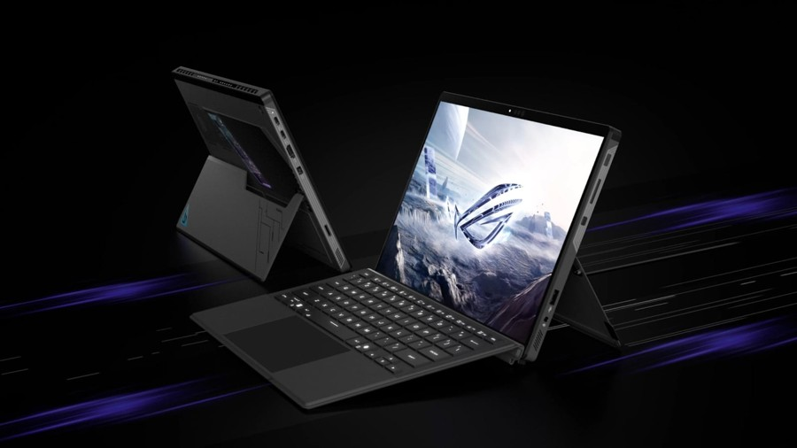

2025 წელს, ROG ლეპტოპები აღჭურვილია უახლესი ჩიპსეტებით Intel Core™ Ultra-დან AMD Ryzen™ და NVIDIA GeForce RTX™ 50-სერიის GPU-მდე, რომლებიც გამოქვეყნდა CES 2025-ზე, რათა უზრუნველყონ განსაკუთრებული შესრულება როგორც სამუშაოსთვის, ასევე თამაშისთვის. GeForce RTX™ 50-სერიის გრაფიკული ბარათები, რომლებიც აღჭურვილია NVIDIA Blackwell არქიტექტურით, უზრუნველყოფს საუკეთესო გამოცდილებას მოთამაშეებისთვის და კონტენტის შემქმნელებისთვის. RTX 50 სერიის მოწინავე AI ტექნოლოგიებით მომხმარებლებს შეუძლიათ ისიამოვნონ განსაცვიფრებელი გრაფიკით და მაღალი ხარისხის თამაშით NVIDIA DLSS 4-ით და შექმნან სურათები წარმოუდგენელი სიჩქარით NVIDIA Studio ინსტრუმენტებით.
ROG ხარისხისა და ინოვაციების მცოდნეებისთვის ASUS-მა მოამზადა შესყიდვის სპეციალური პირობები. ეს შეიძლება იყოს ფიქსირებული ფასდაკლება შერჩეულ მოდელზე, ქეშბექი და სხვა მიმზიდველი შეთავაზებები. არ გამოტოვოთ თქვენი შანსი გახდეთ ROG-ის უახლესი გეიმერული ლეპტოპების მფლობელი და იყოთ პირველთა შორის, ვინც გამოცდის მათ წარმოუდგენელ შესაძლებლობებს! წინასწარ შეუკვეთეთ დღეს და მიიღეთ ექსკლუზიური შეთავაზებები და ბონუსები.
2025 წლის Strix SCAR ლეპტოპები აღჭურვილია ინოვაციური რადიატორის დიზაინით, რომელიც ათავსებს გამაგრილებელ ფრთებს ორთქლის კამერის ზემოთ და ქვემოთ. ეს ინოვაციური დიზაინი არა მხოლოდ დაზოგავს ადგილს, არამედ მნიშვნელოვნად აუმჯობესებს სისტემის გაგრილების ეფექტურობას სრული სიგანის უკანა პანელის ვენტილაციის, თხევადი ლითონის თერმული ინტერფეისის გამოყენების CPU-სა და GPU-სთვის და კარგად გააზრებული ჰაერის ნაკადის სისტემის წყალობით. ამან შესაძლებელი გახადა 240 ვტ-მდე სიმძლავრის მიღწევა, მაშინ როცა ახალი ლეპტოპები უფრო ჩუმად მუშაობენ, ვიდრე წინა თაობის მოდელები. ჩამონტაჟებული ფილტრები ხელს უშლის მტვრის სისტემაში შეღწევას, რაც ახანგრძლივებს ლეპტოპის სიცოცხლეს.